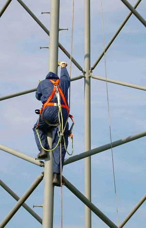

Unter Korrosionsschutz werden eine Reihe von Verfahren zusammengefasst, die es erlauben, die Korrosion von Metall weitgehend zu verhindern. Korrosionsschutz ist schon in der Planungsphase eines Bauwerkes zu berücksichtigen. Viele Ursachen für später auftretende Korrosionsschäden können bereits im Vorfeld vermieden werden. Schon in der Planungsphase zu vermeidende Ursachen sind zum Beispiel: